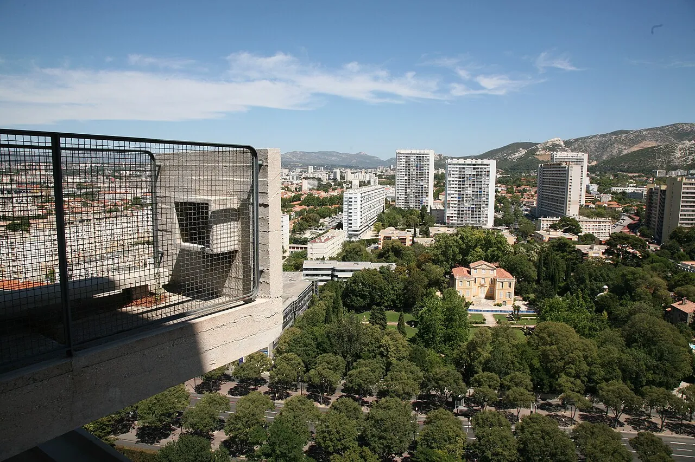
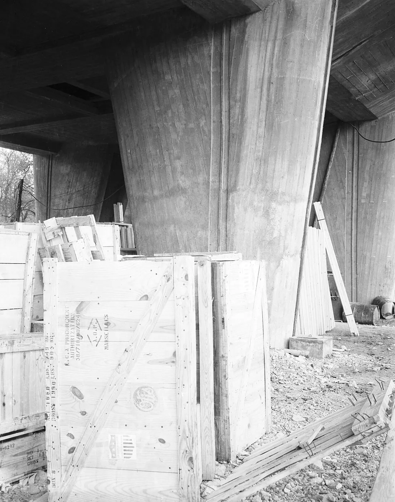

Photos unavailable1/4Drawing: Find Great Architecture · CC BY 4.0

2/4 · Exterior · Jardin de la Magalone, à Marseille (France)Photo: vincent desjardins · CC BY 2.0 · source3/4 · Detail · Architect: le corbusier, 1945Photo: seier+seier · CC BY 2.0 · source

4/4 · ContextPhoto: Department of State. Agency for International Development. 1961-10/1/1979 · Public domain · source
Portrait: Joop van Bilsen for Anefo · CC0 · source
About Unité d'Habitation
The Unité d'habitation (French pronunciation: [ynite dabitasjɔ̃], Housing Unit; Occitan: Unitat d'abitacion) is a modernist residential housing typology developed by Le Corbusier, with the collaboration of painter-architect Nadir Afonso. It formed the basis of several housing developments throughout Europe designed by Le Corbusier and sharing the same name and reached prominence in the 1950s and 60s.
The most famous of these buildings is located in the southern part of Marseille, France. It was added to the UNESCO World Heritage List in 2016 because of its importance to the development of modernist architecture, along with 16 other works by Le Corbusier. It is also designated a historic monument by the French Ministry of Culture. It was damaged by fire on 9 February 2012.